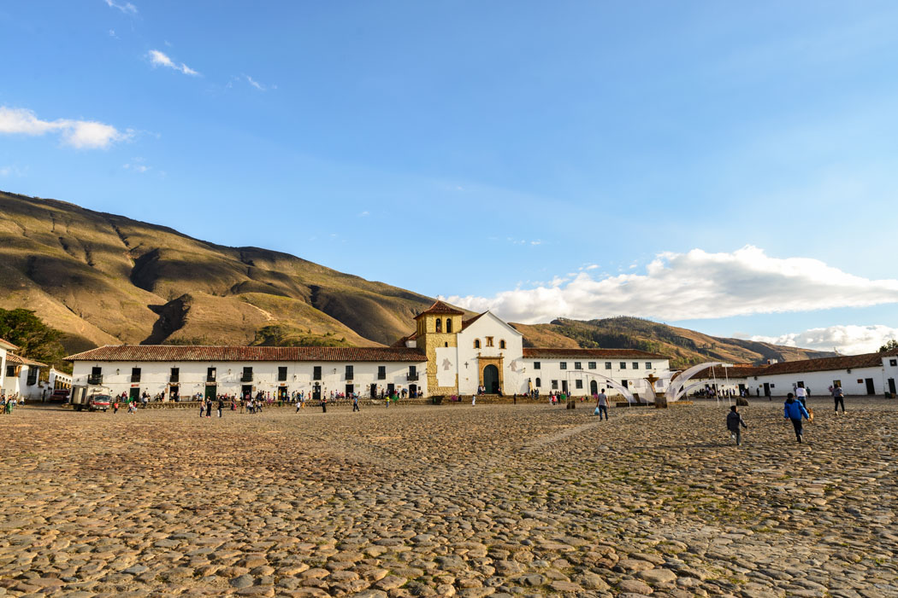
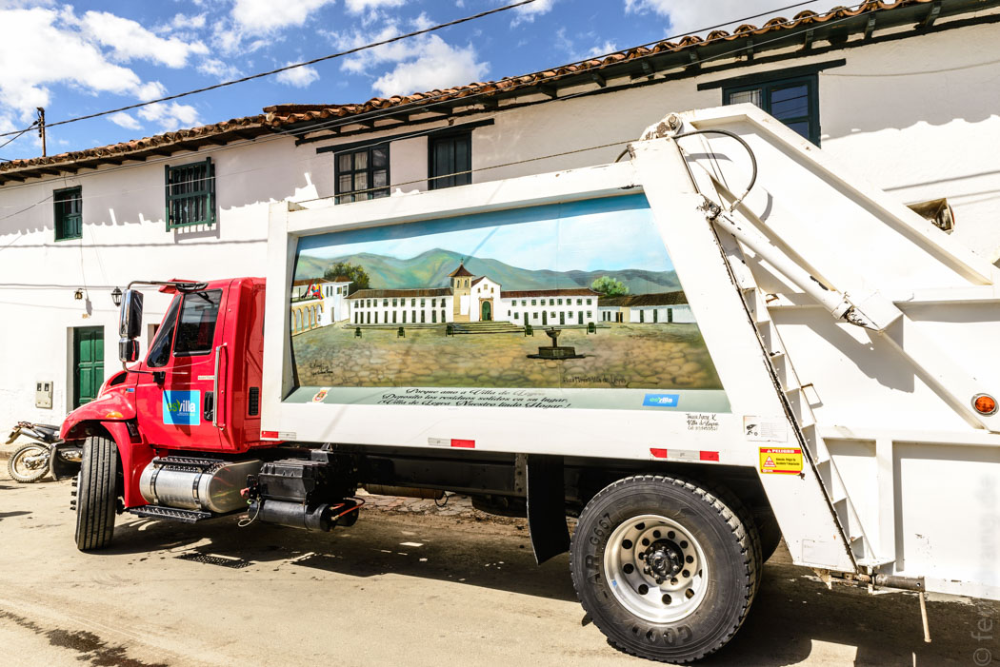
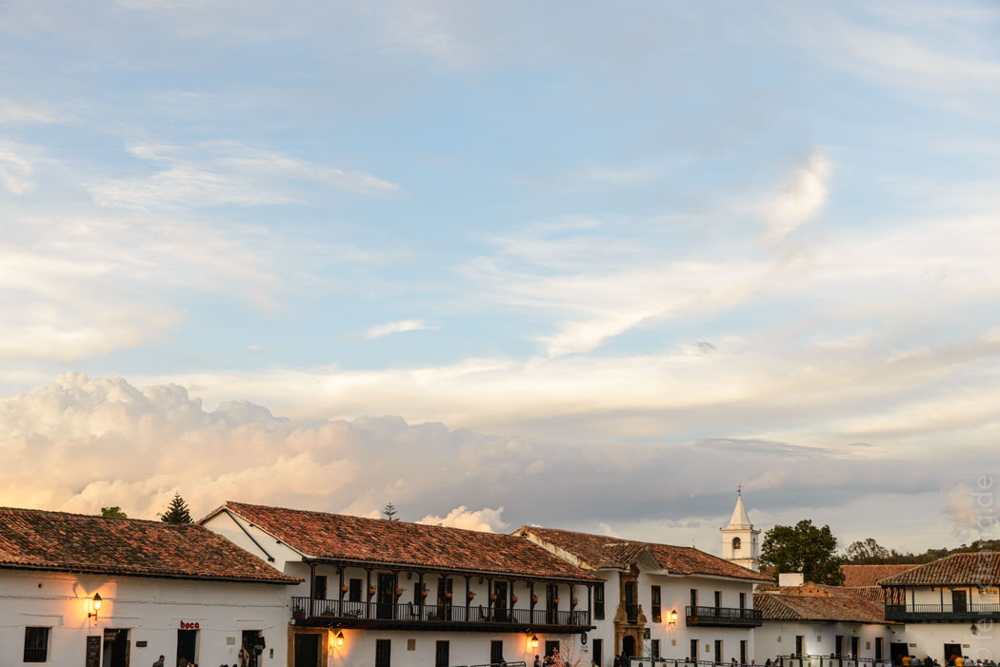
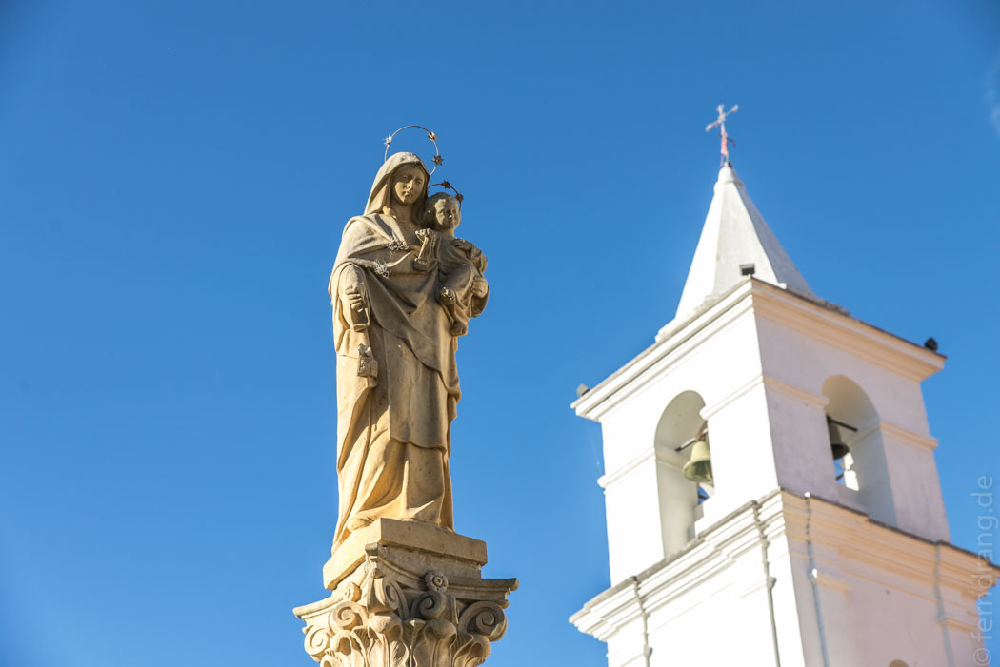
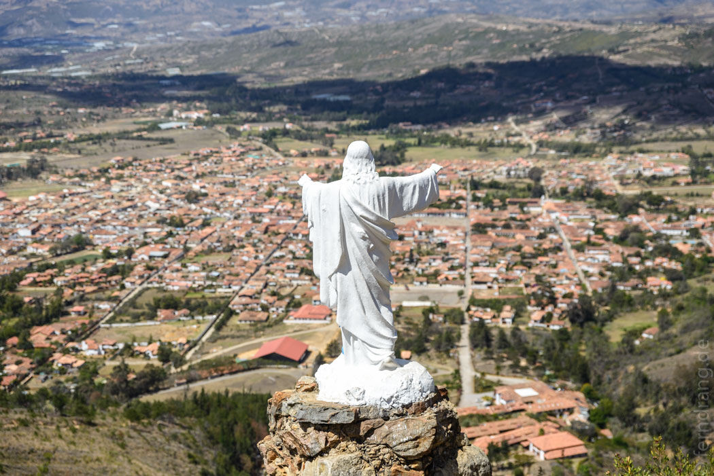
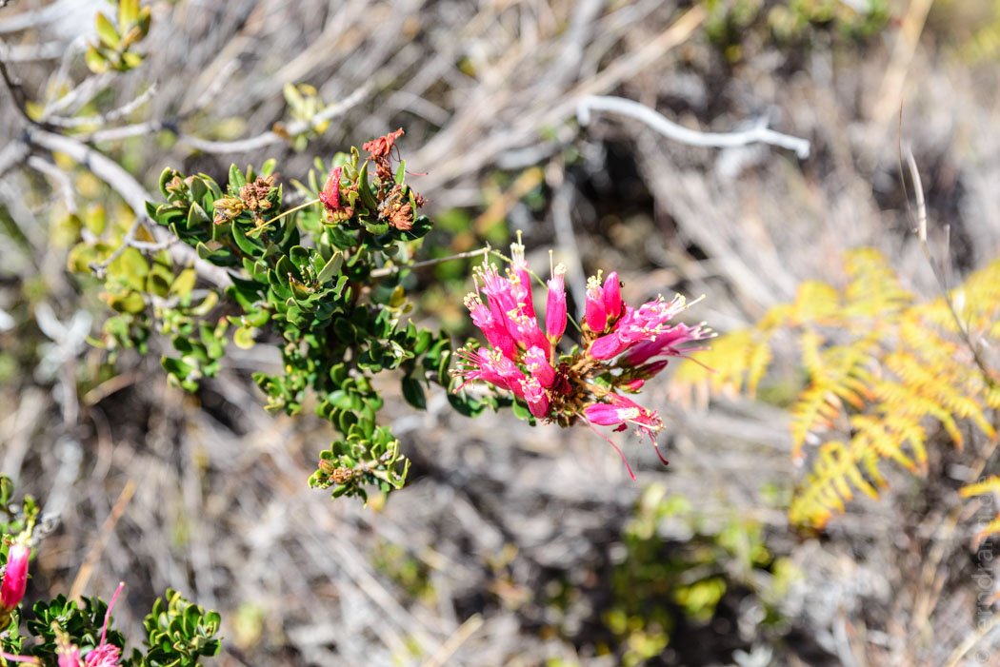
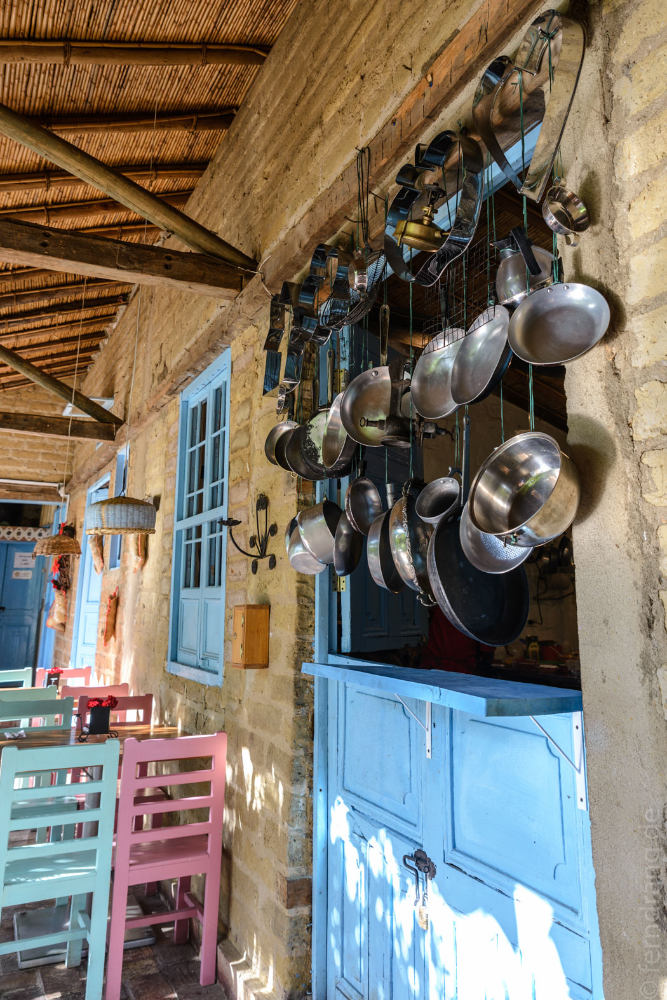
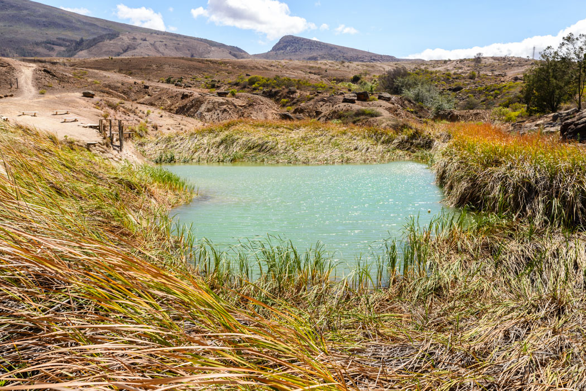
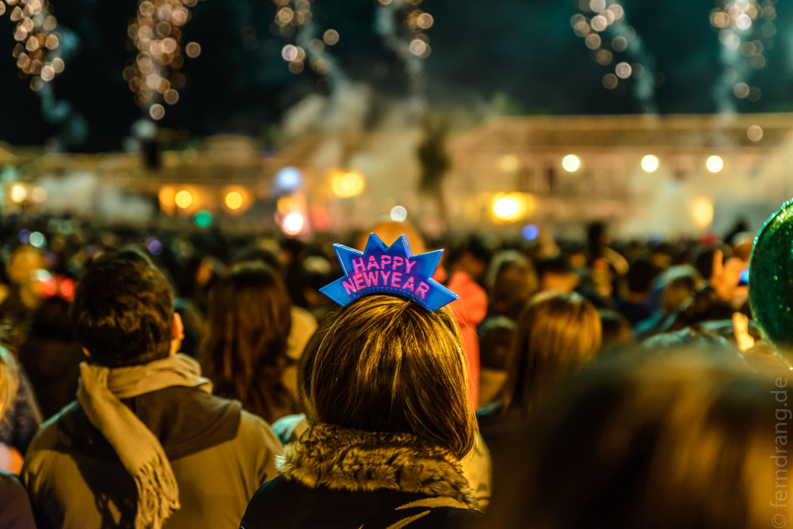
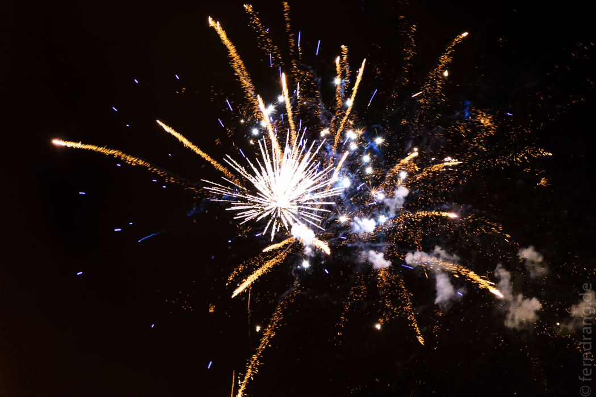

29. Dezember 2015
Villa de Leyva
In Bogota haben wir uns kurzfristig entschlossen nicht um 5:30 Uhr am Busbahnhof sein zu wollen. Man kommt auch anders nach Villa de Leyva, und vor allem auch zu humaneren Zeiten. Ohne Papagei nebenan konnten wir mal etwas länger schlafen. Nach einem leckeren Frühstück im "Café Hibiscus" in La Candeleria sind wir mit dem Transmilenio und unserem ganzen Gepäck bis zum "Portal Norte" gefahren. Das sind immerhin an die 18km durchs Stadtgebiet! Den Anfang davon kannten wir schon. Es ist fast wie eine Graffiti-Stadttour. Die letzte Hälfte ist aber recht unansehnlich. Die Verwirrung auf den Busbahnsteigen, hat uns eine zweite Runde Fahrkarten gekostet hat, weil wir durch das falsche Drehkreuz gegangen sind. Schließlich sind wir aber am Bordstein der Ausfallstraße gelandet, an dem die meisten Busse nach Norden halt machen. Hier haben wir im zweiten Anlauf Sitzplätze bis Tunja bekommen, das in knapp zwei Stunden erreicht war. Der Ort ist so zauberhaft wie eine hektargroße Freiluft-Autowerkstatt für Lastwagen nur sein kann. Aber der Busbahnhof ist überschaubar und wir hatten in wenigen Minuten den Anschluss nach Villa de Leyva.
Villa de Leyva ist eine kleine Perle aus der Kolonialzeit. Die Häuser haben alle zwei Geschosse, sind weiß getüncht und haben Holzbalkone und Dächer aus Tonziegeln. Und tatsächlich wird dieser Look überall durchgehalten. Die Straßen aus riesigem Kopfsteinpflaster zwingen den Besucher zum gemächlichen Wandeln. Die großen Häuserblöcke verstecken meistens einen großen Patio, in denen sich oft tolle Restaurants verstecken. In der Mitte des Örtchens liegt eine gigantische Plaza – angeblich die größte in Südamerika. In einem Ort, der in keine Richtung mehr als zehn Straßen hat, ist sie allemal riesig. Aber nicht nur die Architektur verbreitet italienischen Charme. Ringsum liegen Hänge mit sonnenverbranntem Gras und sandigen Flanken.




Unser Guesthouse "Renacer" liegt etwas außerhalb des Orts. Wir haben ein schönes Zimmer mit Hängematte erwischt, in der man am späten Nachmittag die Zeit zum Abendessen in der Sonne verbringen kann. Letzteres ist eine der Hauptbeschäftigungen hier. In den Patios und Kolonialhäusern gibt es mehr gute Restaurants, als man bei einem Aufenthalt probieren kann. Dafür kommen die reichen Leute aus Bogota einfach häufiger her. Überhaupt wimmelt die Stadt kurz vor Silvester von dicken Autos aus Bogota, die auf dem groben Pflaster ihre Geländegängigkeit beweisen.
30. Dezember 2015
Angeblich sollte Villa de Leyva auch Ausgangspunkt für schöne Wanderungen sein. Es stellte sich dann heraus, dass die meisten Wanderwege wegen der schlimmen Dürre, die die Gegend seit Monaten austrocknet, gesperrt sind. Überall hängen Schilder, die vor Feuern warnen. Ansonsten verstehen die einheimischen Gäste unter Wandern etwas, das entweder mit Pferden oder mit Quads gemacht wird.
Wir wollten zumindest mal einen Blick von oben auf die Stadt werfen und haben uns zum "Mirador Santo" aufgemacht. Ein Pfad führt, meistens über nackten Stein, einen Hang hinauf und endet bei einer Christus-Statue, die gnädig auf das Treiben blickt. Dahinter ist uns ein Pfad empfohlen worden, der weiter bergauf führt. Nach einer Weile sind wir im stacheligen Gebüsch stecken geblieben und haben die gute Aussicht und das gute Wetter genossen.


Nach ein paar Stunden auf den Beinen kann man sich im Ort in einer kleinen, französischen Bäckerei mit leckerem Kaffee und kleinen Sünden wieder stärken. Danach haben wir uns faul durch die zahlreichen Poncho- und Tinnefläden dem nächsten köstlichen Abendessen entgegen geschoben. Ein sehr guter Ort dafür ist die "Casa Quintero", ein Komplex aus Innenhöfen, direkt an der Plaza. Hier gibt es zu jeder Tageszeit etwas zu schlemmen – sogar Apfelkuchen.

31. Dezember 2015
Ganz faul wollten wir das Jahr nicht ausklingen lassen. Daher sind wir zu den "Posos Azules", türkis-blauen Tümpeln, gegangen. Der Weg führt aus der Stadt hinaus in einen kargen, wüstenhaften Teil des Tals, das überall malerisch mit Stacheldraht in gleich leere Parzellen geteilt wird. Kein Mensch ist hier unterwegs, und nach einer Weile kommt einem automatisch das "Lied vom Tod" in den Sinn. Ganz einsam sind wir aber nicht geblieben, weil immer wieder eine Reihe von Motorwanderern mit Quads oder Buggys in einer Staubwolke an uns vorbei gerauscht sind. Irgendwann tauchte endlich ein Wegweiser auf. Der Weg endete in einem Stacheldraht. Doch bevor wir uns wundern konnten tauchte ein Mädchen auf, um Eintritt zu kassieren. Die Tümpel haben sich aufgrund der Dürre als wenig eindrucksvoll erwiesen. Nachdem wir uns am Rand der Pfütze davon überzeugt hatten, dass es mit einem höheren Wasserstand sicher wunderschön und türkis wäre, sind wir weiter gezogen.

Das Fossilienmuseum erreicht man über eine langweilige Landstraße. Dort kann man ein komplett erhaltenes Skelett eines Dinosauriers sehen, das zur Hälfte aus Schädel und der wiederum fast nur aus Zähnen besteht. Wir waren so beeindruckt, dass wir sofort zurück nach Villa de Leyva wollten. Dort haben wir uns in unserem neuen Lieblingscafé mit den echten Highlights beschäftigt.
Am letzten Abend des Jahres ist es in Villa de Leyva genauso schwer wie in einer Großstadt einen Tisch in einem Restaurant zu bekommen. Mit etwas Glück sind wir untergekommen und haben sehr lecker gegessen. Um die Zeit bis Mitternacht zu vertreiben haben wir sogar eine Bar aufgetrieben und auf 2015 angestoßen. Später sind auch wir in das Gravitationsfeld der Plaza geraten, wo auf einer Bühne eine Salsa-Kapelle Stimmung gemacht hat. Unglaublich waren aber die Menschenmengen, die sich auf der Plaza herumdrückten. Zehntausende Menschen haben hier fröhlich feiernd das Neue Jahr erwartet. Als es dann endlich soweit war, ging ein unfassbares Feuerwerk los. Wild ballern war offenbar verboten, aber das organisierte Feuerwerk konnte es wirklich mit den großen Städten aufnehmen. Nach einer Dreiviertelstunde war immer noch nicht Schluss.


01. Januar 2016
Wie es sich gehört, sind wir friedlich, entspannt und vor allem spät ins Neue Jahr gestartet. Eigentlich war der Plan jetzt schon nach Cocuy aufzubrechen. Aber die Busse fahren diese fiese Strecke an den Feiertagen nicht. Glücklicherweise hatten wir noch davon erfahren, sodass wir eine Nacht länger in Villa de Leyva bleiben konnten (bzw. mussten). Stattdessen haben wir den Puffertag komplett verfaulenzt. Es klingt vielleicht, als könne man hier nicht viel machen. Aber letztlich ist Nichtstun und sehr gutes Essen eine ideale Kombination.